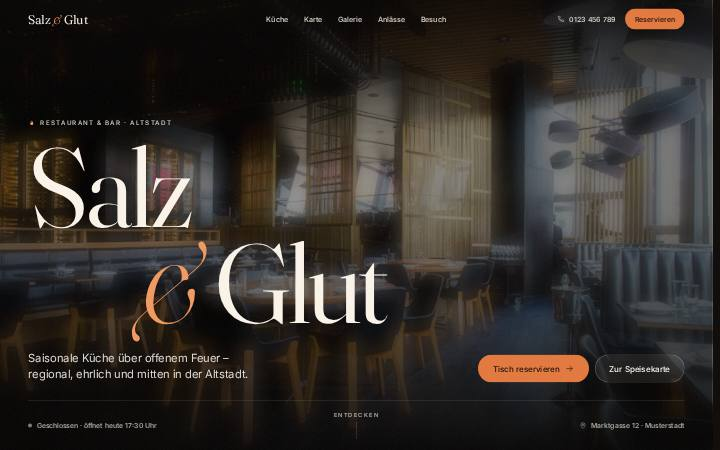
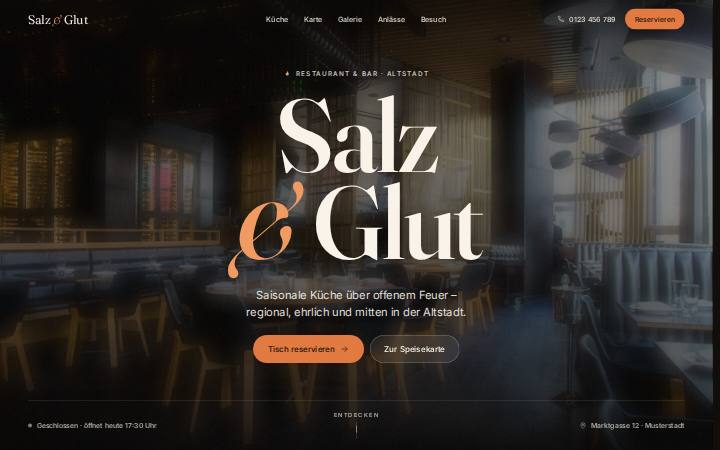
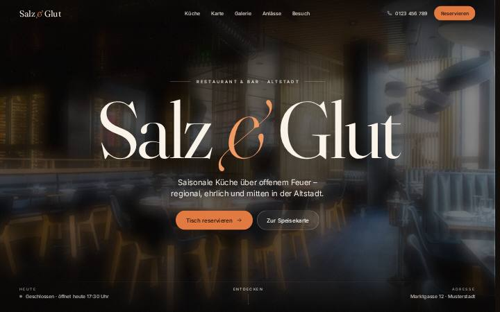
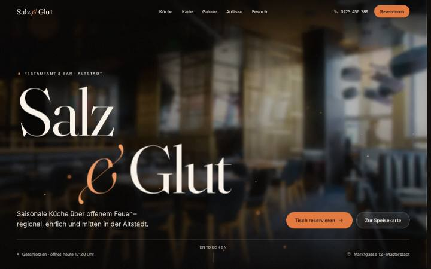
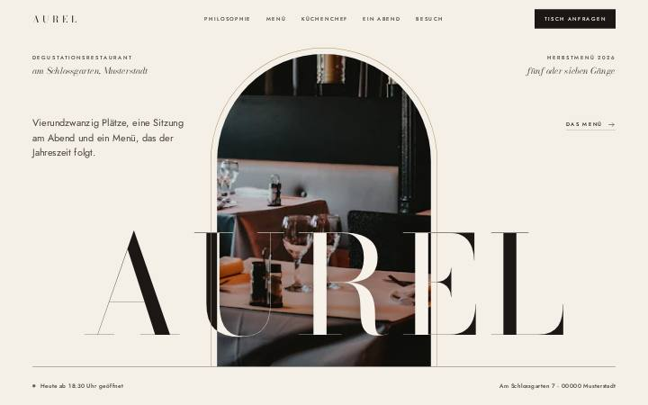
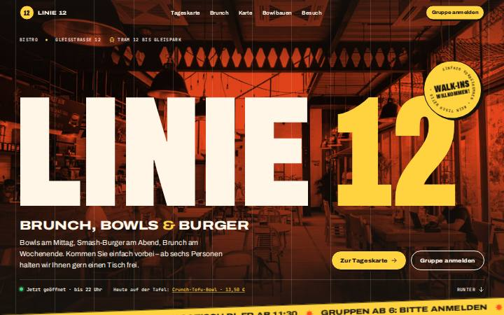
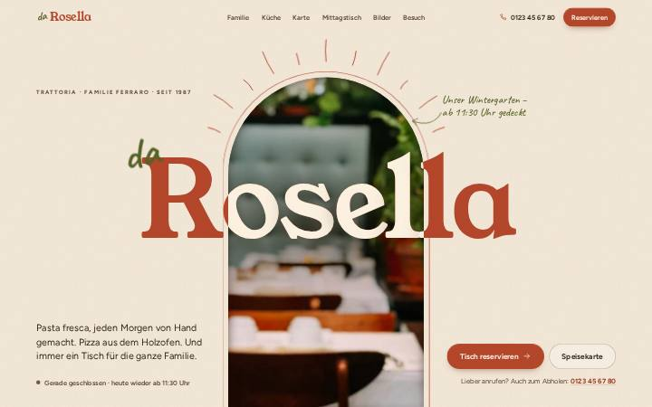

Salz & Glut
BasisRestaurant & Bar in der Altstadt. Das Foto rückt zurück, die Wörter kommen scharf nach vorn. Mit Speisekarte, Galerie, Live-Öffnungsstatus, Tischreservierung und drei Stilen (Glut, Salon, Terrasse).
- Hero-Jury
- 70
- Design-Jury
- 79,5
Die Basis „Salz & Glut“ plus sechs Varianten, die eine Jury getestet und bewertet hat. Tippe auf eine Karte, um die Seite zu öffnen. Mit der Zurück-Taste oder -Geste kommst du wieder hierher.
Ordner restaurant/

Restaurant & Bar in der Altstadt. Das Foto rückt zurück, die Wörter kommen scharf nach vorn. Mit Speisekarte, Galerie, Live-Öffnungsstatus, Tischreservierung und drei Stilen (Glut, Salon, Terrasse).
Gleiche Seite, nur der Einstieg ist anders

Das Foto ist zuerst nur durch die riesigen Buchstaben zu sehen. Dann wird es zum Hintergrund und die Schrift füllt sich hell.
arena/hero-durchblick/
Cinemascope-Eröffnung: Die Balken öffnen sich, über der Schrift liegt ein Glut-Schimmer.
Bekannt: Der Wort-für-Wort-Effekt im Abschnitt „Küche“ ist hier kaputt.
arena/hero-kino/
3D-Kamerafahrt nach hinten, Parallaxe mit der Maus, Glutfunken.
Bekannt: Die Funken kosten dauerhaft Bildrate.
arena/hero-tiefe/Eigenes Restaurant, eigenes Konzept

Degustationsrestaurant: Elfenbein, Bodoni, das Foto zieht sich in einen Bogen zurück. Mit Menü-Konfigurator.
arena/design-fine-dining/
Urbanes Bistro im Plakatstil, das Foto als Duotone-Hintergrund. Mit Tageskarte, Bowl-Baukasten und Gruppenanfrage.
arena/design-bistro/
Familien-Trattoria: Terrakotta, Karo-Tischdecke und eine Galerie an der Wäscheleine.
arena/design-trattoria/Getestet in Chromium (Desktop und Handy-Simulation), noch nicht in Safari oder auf echten Geräten. Fotos: Unsplash.